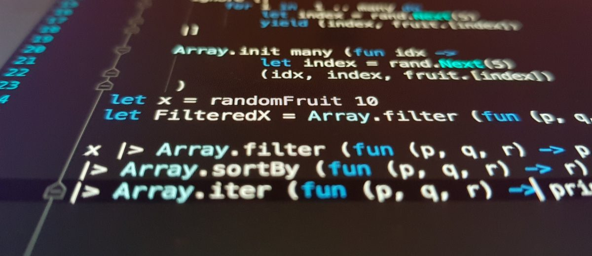

Il existe de nombreux IDE. Certains permettent de développer pour un système d’exploitation spécifique, d’autres sont polyvalents. Dans la vidéo qui suit, il est expliqué comment choisir son logiciel par rapport a son besoin :
IDE : Integrated Development Environment

Afin de répondre aux besoins des développeurs, l'integrated development environment (ou IDE) propose un panel d'outils dédiés à la programmation. Sur la base d'un langage spécifique, comme Java ou Python, il est plus simple d'appréhender un projet de développement. Par exemple, la création d'un logiciel ou d'une application Web.
- un éditeur de code intelligent (coloration, autocomplétion, mise en forme) ;
- un simulateur (logiciel permettant de tester l’exécution de son logiciel) ;
- un compilateur (qui va transformer le code source rédigé par le développeur en code binaire);